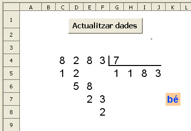
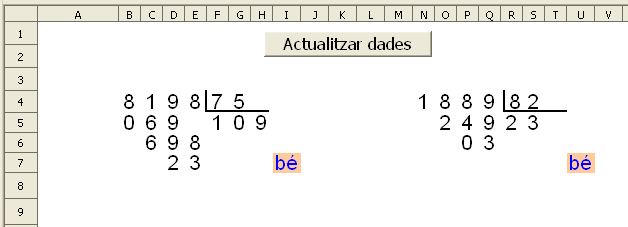

Presentació gràfica de l'activitat

Funcions que es fan servir en aquesta activitat
Objectiu de l'activitat
Desenvolupament de l'activitat
1. Obrir el fitxer M6 i afegir un nou full amb el nom de M6P10 divisió 1
2. Fer que el format de les cel·les del rang C4:K8 sigui semblant al de l'activitiat de presentació. Seria convenient que l'amplada de les cel·les del rang A1:AE1 fos de 0,70cm per facilitar la visió de l'activitat (és possible que s'hagi d'ajustar l'amplada de la cel·la AD4 per fer visible el seu contingut).
3. Escriure a la cel·la C4: =SI($A$1=0;ALEATENTRE(1;9))
4. Copiar la cel·la C4 a les cel·les del rang D4:G4. Cal tenir en compte que a la cel·la E4 la fórmula serà =SI($A$1=0;ALEATENTRE(G4;9)).
Amb aquesta fórmula, l'enter més petit retornat per la cel·la E4 serà com a mínim el valor de la cel·la G4 . D'aquesta manera s'aconsegueix que el resultat dels dos números concatenats de les cel·les
D5 i E5 sempre sigui igual o més gran que el valor de la cel·la G4 i així evitar escriure un 0 a la cel·la H5. El fet d'escriure el 0 a la cel·la H5 no es cap problema si es segueix el procediment normal de la divisió. Però si fos el cas d'escriure el 0 a la cel·la H5, hi hauria l'opció d'escriure a la cel·la F5 el número que hi ha a la cel·la F4 (per estalviar un pas) fent més complexe el procediment de resoldre la divisió mitjançant el calc.
En tot cas, si s'escriure la fórmula =SI($A$1=0;ALEATENTRE(0;9)) a la cel·la E4, s'hauria d'advertir que es faci la divisió seguint sempre el mateix procediment encara que es puguin estalviar passos.
5. Escriure a la cel·la
AD4:
=VALOR(C4&D4&E4&F4)
Els valors que apareixen a les cel·les del rang C4:F4 caldrà concatenar-los per formar un número (el dividend). En aquest cas es concatenen a la cel·la AD4.
6. Escriure a la cel·la
AE4:
=G4
Tenin el dividend a la cel·la AD4, caldrà obtenir el divisor que en aquest cas es posa a la cel·la AE4.
7. Escriure a la cel·la
AE5:
=QUOCIENT(AD4;AE4)
D'aquesta manera s'obté el quocient de la divisió.
8. Escriure a la cel·la
V4:
=C4
9. Copiar la cel·la
V4 al rang de les cel·les
W4:Z4
D'aquesta manera es torna a repetir la mateixa divisió de l'activitat. Amb la línia poligonal es pot fer la línia vertical i horitzontal que separa el dividend del divisor.
Ara es tracta d'expressar mitjançant fórmules el procediment normal que es segueix per fer una divisió.
10. Escriure a la cel·la
Z5:
=VALOR(MIG(AE5;1;1))
Amb aquesta fórmula s'obté el primer número del divisor començant per l'esquerra que hi ha a la cel·la AE5.
11. Escriure a la cel·la
V5:
=SI(V4>=Z4;V4-Z5*Z4;"")
Amb aquesta fórmula s'expressa que si el valor de la cel·la V4 és igual o major que el valor de la cel·la Z4, llavors es multilplica el valor de la cel·la Z5 pel valor de la cel·la Z4 per a després aquest resultat restar-ho al valor de la cel·la V4; si no, no mostra cap valor.
12. Escriure a la cel·la
W5:
=SI(V4>=Z4;W4;VALOR(V4&W4)-Z5*Z4)
Amb aquesta fórmula s'expressa que si el valor de la cel·la V4 és igual o major que el valor de la cel·la Z4, llavors apareix el valor de la cel·la W4; si no,es resta del valor concatenat de les cel·les V4 i W4 amb el resultat de multiplicar el valor de la cel·la Z5 pel valor de la cel·la Z4.
13. Escriure a la cel·la
AA5:
=VALOR(MIG(AE5;2;1))
Aquesta fórmula segueix el mateix procediment que l'explicat en la nota del pas 7, però el número que s'obté és el primer des de la posició d'inici 2 començant per l'esquerra.
14. Escriure a la cel·la
X5:
=SI(V4>=Z4;"";X4)
Amb aquesta fórmula s'expressa que si el valor de la cel·la V4 és igual o major que el valor de la cel·la, llavors no es mostra cap valor; si no, s'obté el valor de la cel·la X4.
15. Escriure a la cel·la
W6:
=SI(V4>=Z4;VALOR(V5&W5)-AA5*Z4;"")
16. Escriure a la cel·la
X6:
=SI(V4>=Z4;X4;VALOR(W5&X5)-AA5*Z4)
17. Escriure a la cel·la
Y6:
=SI(V4>=Z4;"";Y4)
18.Escriure a la cel·la
AB5:
=VALOR(MIG(AE5;3;1))
19. Escriure a la cel·la
X7: =SI(V4>=Z4;VALOR(W6&X6)-AB5*Z4;"")
21. Escriure a la cel·la
Y7:
=SI(V4>=Z4;Y4;VALOR(X6&Y6)-AB5*Z4)
22. Escriure a la cel·la
AC5:
=SI(LONG(AE5)=3;"";VALOR(MIG(AE5;4;1)))
23. Escriure a la cel·la
Y8:
=SI(V4>=Z4;VALOR(X7&Y7)-AC5*Z4;"")
Ara, havent fet el desenvolupament de la divisió, només caldrà comparar-la amb el desenvolupament de la divisió que es proposa fer. En cas que els valors comparatius siguin iguals, llavors apareixerà el bé de l'avaluador; si no, apareixerà el no avaluador.
24. Escriure a la cel·la
M5:
=SI(EXACTE(C5;V5);"b";"")
Amb aquesta fórmula es comparen els valors de les cel·les C5 i V5 mitjançant la funció exacte que en cas que siguin iguals, llavors apareixerà la lletra b; si no es mostrarà cap valor.
25. copiar la cel·la
M5 a les cel·les del rang
N5:T5
26. copiar la cel·la
M5 a les cel·les del rang
N6:P6
27. copiar la cel·la
M5 a les cel·les del rang
O7:P7
28. copiar la cel·la
M5 a la cel·la
P8
29. Escriure a la cel·la
K7:
=SI(I(M5="b";N5="b";O5="b";P5="b";Q5="b";R5="b";S5="b";T5="b";N6="b";O6="b";P6="b";O7="b";P7="b";P8="b");"bé";"")
Amb aquesta fórmula s'expressa que si cada una de les cel·les que conté la fórmula torna la lletra "b", llavors apareixerà el bé avaluador; si no, apareixerà el no avaluador.
30. Fer una macro amb les següents funcions:
31. Protegir les cel·les que convingui.
32. Ocultar les cel·les que convingui.
33. Comprovar que funcioni correctament l'activitat.
34. Desar el fitxer M6
Amb el calc també es poden fer divisions amb dues xifres al divisor.
